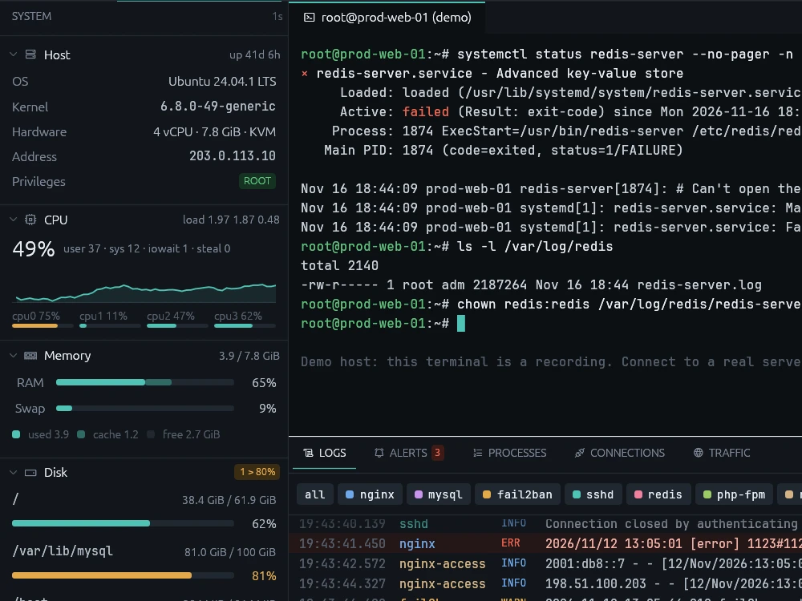
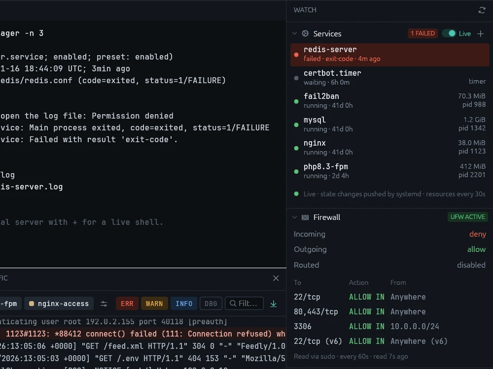
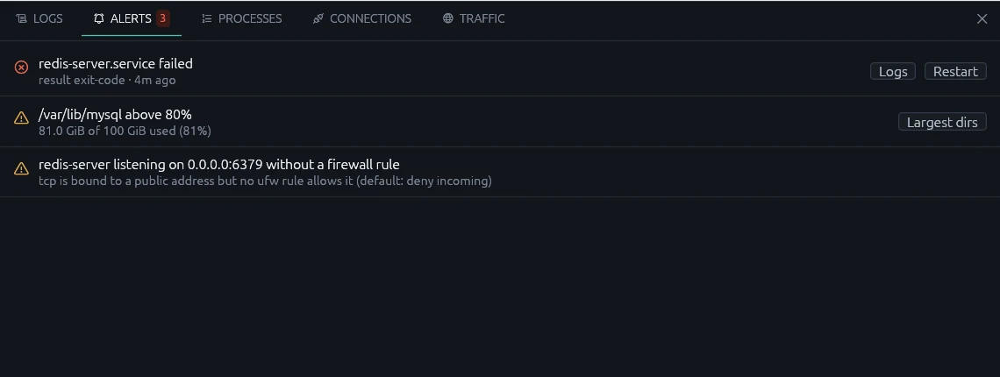
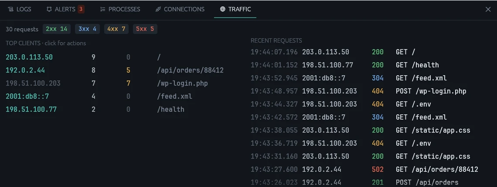
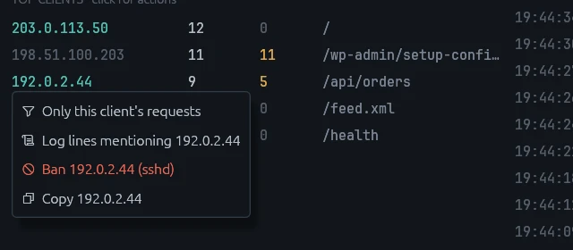
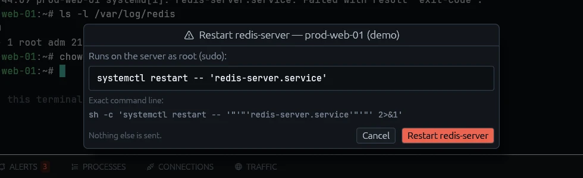
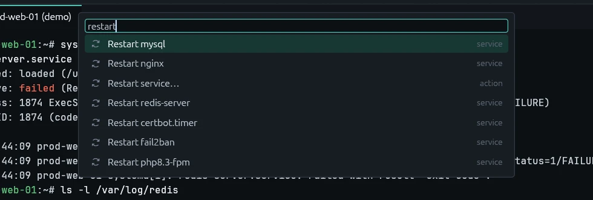
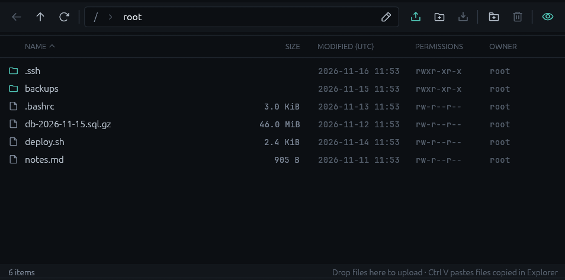

Windows
Your systemWindows 10 or 11, 64-bit
Not code-signed yet: SmartScreen may ask you to confirm (More info → Run anyway).
SecureWire is a desktop SSH workstation. You get a real terminal in the middle and live panels around it: resources, services, firewall, fail2ban, logs and web traffic. It all runs over one SSH connection, and nothing is installed on your server.
Windows, Linux and macOS · servers: any Linux with bash and OpenSSH · all downloads

The real app, showing its built-in demo host (sample data, no server needed: securewire --demo).
Measured on a 2-vCPU Ubuntu VM with the default panels open, and a Windows client.
No more free -h, df -h, systemctl status, journalctl -u and fail2ban-client status on every login. SecureWire keeps the answers live next to your shell.
Terminal tabs run vim, htop and tmux like any good terminal. Around them, panels update in place: CPU per core, memory, disks, network, listening ports and who's logged in.

Pick the units you care about. In Live mode, systemd pushes state changes, so a crash shows up within a second. The firewall section reads ufw, nftables or iptables, and the security section shows each fail2ban jail with its banned IPs.

SecureWire finds your journal units and log files, then follows the ones you pick in one colour-coded stream. Filter by level or regex, and pick up where you left off after a reconnect. Alerts collect what needs attention, each with a one-click fix.

Add an nginx or apache access log and the Traffic tab shows requests as they arrive: top clients, status codes and paths. Click any IP, in traffic or in a log line, to filter by it or ban it with fail2ban.
/wp-login.php

Restart a service, kill a process, ban an IP. Before anything runs, SecureWire shows the exact command line it will send and waits for you. Nothing else is sent. Arguments are validated and quoted, never pasted into a shell string.

Press Ctrl Shift P and type: restart a unit, tail a file, ban an IP, open a log. Right-click a service or port to tunnel it to your computer, such as MySQL, Redis or an admin dashboard. The tunnel listens on 127.0.0.1 only and uses the same SSH connection.
~/.ssh/config, jump hosts included
Press Ctrl Shift E to browse the server. Copy, cut, paste, rename and delete there with plain cp, mv and rm as your own user. Anything that removes or replaces data shows the exact command first. Pick files to upload, drop them on the window, or paste files copied in Explorer. To download, pick a folder on your computer.

No agent, no daemon, no open port. When you connect, a small bash script is streamed over SSH and runs from memory. It sends back plain text and stops when you disconnect.
SecureWire parses the data, works out rates and alerts, and draws the panels. The window only redraws when something changes.
Every feature is a channel on that one connection:
shellyour terminal tabsbash -sthe monitoring script, streamed on stdinjournalctllog units you follow, resumed by cursortail -Flog files, through sudo if root-onlyexecactions you confirmeddirect-tcpipyour tunnelsCollapse a section and its collection stops. Unfocused or minimized windows slow everything down.
About 0.3% of one core and under 1 KB/s with the default panels. Expensive checks only run when their data changes.
Needs bash and OpenSSH. Uses systemd, ufw, nftables, iptables and fail2ban if they are there, and skips them if not.
A tool that sits between you and production should be boring about security. Here is what SecureWire does, and what it never does.
Checked against your ~/.ssh/known_hosts. A new key is shown for you to approve. A changed key is a hard stop, not a warning.
Your sudo password is asked once per session and kept only in memory. It reaches sudo -S only through a channel's stdin, never in arguments, environment or logs.
The monitoring script runs under a single sudo, so your auth log doesn't fill with an entry every few seconds.
Every remote command comes from a fixed template with validated, quoted arguments. Anything that changes the server is shown and confirmed first.
Log lines, unit names and window titles are stripped of control characters before they are drawn outside the terminal.
SecureWire talks to your servers and nothing else. Saved hosts live in a local file, without passwords. The code is open for you to check.
Free and open source under MIT or Apache-2.0. Each download is a single small app with nothing else to install.
Windows 10 or 11, 64-bit
Not code-signed yet: SmartScreen may ask you to confirm (More info → Run anyway).
x86_64, X11 or Wayland
AppImage: chmod +x it first.
macOS 11 or later, Apple silicon
Not notarized yet: open it the first time with right-click → Open.
Check your download against SHA256SUMS · all releases · build from source
No. SecureWire only needs SSH access. The monitoring script is streamed over the connection and runs from memory with bash -s. Nothing is written to disk, and nothing keeps running after you disconnect.
Linux with OpenSSH and bash. Services need systemd. The firewall section reads ufw, nftables or iptables. The security section uses fail2ban if it's installed. Anything missing is skipped and the rest still works.
Firewall rules, fail2ban, root-only logs and service actions need root. SecureWire asks once per session and keeps the password in memory only. It goes straight to sudo -S on a channel's stdin, never to disk, the command line or logs. You can skip it, and those sections then say they need sudo. If you log in as root, nothing is asked.
No. It only reads, until you start an action such as restart a service, kill a process or ban an IP. Then it shows the exact command and waits for you to confirm. It never edits firewall rules or config files.
~/.ssh/config?Yes. You can log in with a key file, ssh-agent or a password, and import hosts from ~/.ssh/config, including ProxyJump jump hosts.
The 1.1.0 packages are not code-signed or notarized yet. You can check each file against SHA256SUMS on the release page, or build it from source.
Yes. SecureWire is open source under the MIT or Apache-2.0 licence, at your option. No account, no telemetry, no paid tier.
Try it without a server: run securewire --demo after installing.